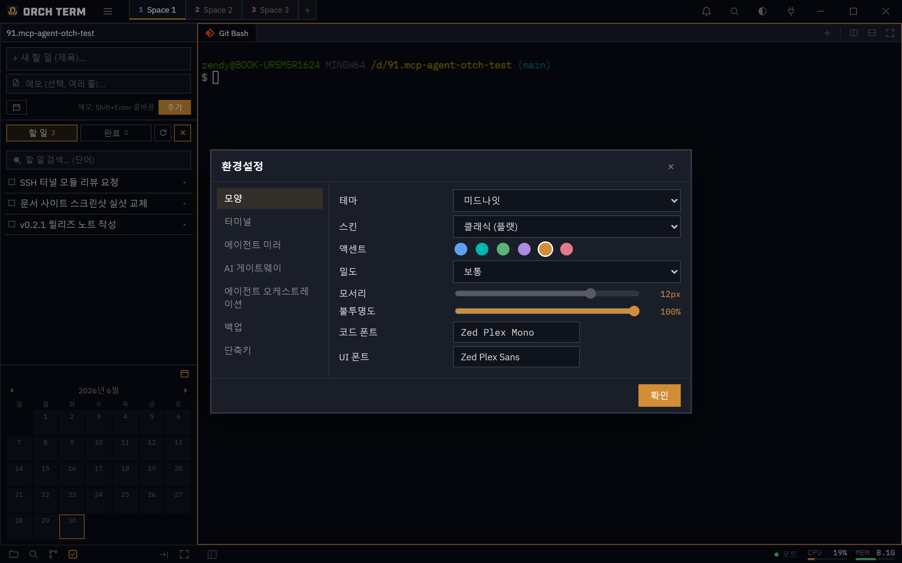
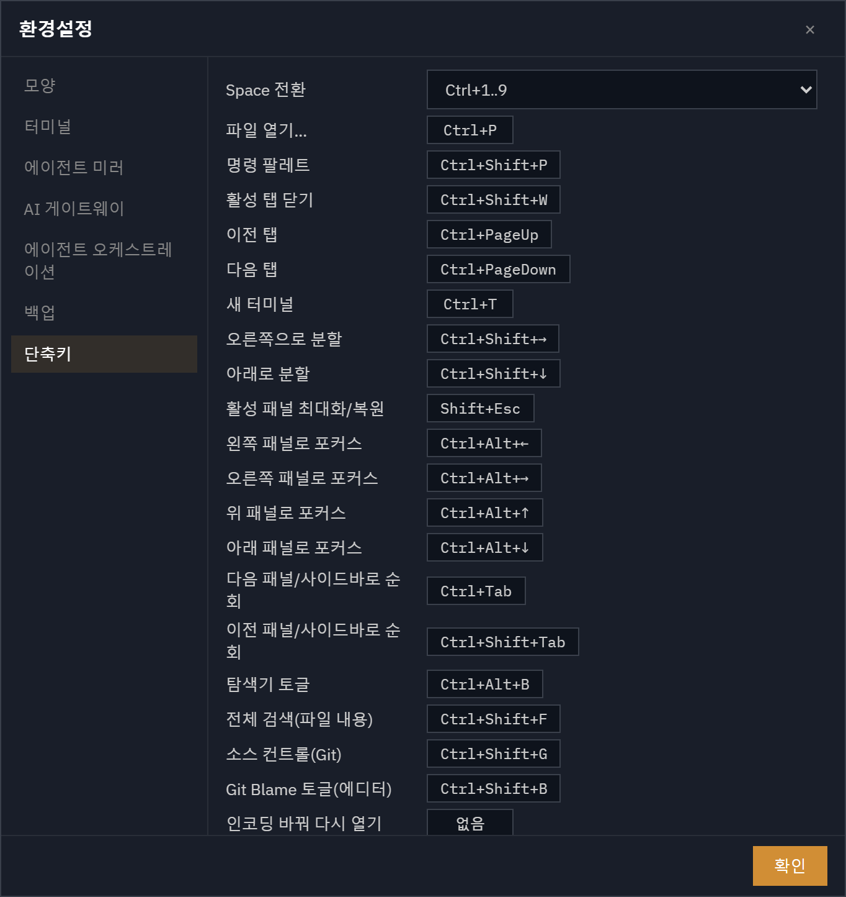
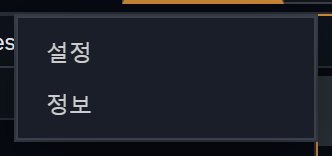
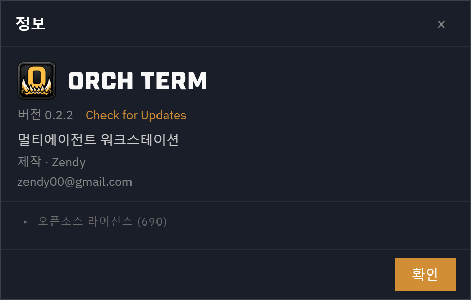

그 외 · 시스템
외관 · 폰트 · 단축키
앱의 룩앤필을 손에 맞춥니다. 코딩 폰트를 미리보며 고르고, 창 투명도를 조절하고, 단축키를 다시 지정합니다 — 모두 햄버거 메뉴 → 설정에서.
폰트 고르기
설정의 코드 폰트·UI 폰트 피커에서 번들 폰트와 설치된 시스템 폰트를 함께 고릅니다. 각 행은 그 폰트로 그린 샘플이라 한글 폭과 il1Lo0 구분을 눈으로 비교할 수 있습니다. 코드 폰트는 고정폭(monospace)만, UI 폰트는 전체를 보여줍니다.

창 투명도
슬라이더 하나로 창 전체를 반투명하게 만듭니다. 탐색기·헤더·에디터 본문 같은 메인 표면이 함께 흐려지고, 메뉴·모달·팔레트는 가독성을 위해 또렷하게 유지됩니다.
기본은 100%(불투명 창)입니다. 투명 창은 화면 합성 GPU 사용량이 크게 늘어나므로, 불투명 상태에서 슬라이더를 내리면 확인창이 뜨고 앱을 다시 시작해야 투명 창이 적용됩니다. 다시 100%로 올리면 지금 다시 시작할지 묻고, 다시 시작하면(또는 다음 시작부터) 불투명 창으로 돌아가 GPU 사용량이 줄어듭니다.
터미널 렌더러
설정 → 모양의 터미널 렌더러에서 고릅니다. DOM(기본)은 GPU를 적게 쓰고, WebGL은 대량 출력을 더 빠르게 그리고 박스·블록 문자(─ │ █, 에이전트 TUI의 테두리 등)를 줄 사이 틈 없이 이어 그리지만 GPU 사용량이 올라갑니다(선택 시 확인창). DOM에서는 화면 배율에 따라 박스 선 사이에 가는 틈이 보일 수 있습니다. 바꾸면 열려 있는 터미널에 바로 적용됩니다.
상태바
창 맨 아래 한 줄입니다. 왼쪽에는 탐색기 열기/닫기와 모든 패널을 탭으로 병합 버튼이 있고, 오른쪽에는 아래 순서로 정보가 놓입니다.
| 항목 | 내용 |
|---|---|
| ① 인코딩 · 줄바꿈 | 에디터 탭일 때만 보입니다. 인코딩을 누르면 다른 인코딩으로 다시 열거나 변환해 저장하고, 줄바꿈(LF·CRLF)을 누르면 바꿉니다(코드 에디터). |
| ② 포트 | 앱이 연 포트 목록을 엽니다. 인앱 브라우저 미러가 켜져 있으면 점이 초록색으로 켜집니다(에이전트 미러). |
| ③ AI 사용량 | Codex · Claude · Antigravity · xAI의 남은 사용 한도. 누르면 상세 창이 열립니다(아래). |
| ④ CPU · MEM · GPU | 컴퓨터 전체의 CPU·메모리·GPU 사용률(0.5초마다 갱신). GPU는 측정할 수 있는 OS(macOS·Windows)에서만 보입니다. 설정 → 상태바에서 끌 수 있습니다. |
AI 사용량
Codex · Claude · Antigravity · xAI(Grok)를 쓰고 있다면, 각 서비스의 사용 한도를 얼마나 썼는지를 상태바에서 바로 봅니다. 이미 설치해 둔 각 CLI의 로그인 정보로 조회하므로 따로 로그인할 필요가 없고, 로그인 기록이 없는 서비스는 나타나지 않습니다(하나도 없으면 이 영역 전체가 숨겨집니다).
상태바에서 읽기
서비스마다 단색 아이콘 + 사용률(%) + 작은 막대로 표시됩니다. 한도가 둘인 서비스는 두 줄로 나뉩니다. 마우스를 올리면 서비스 이름과 각 줄이 무엇인지 툴팁으로 보여 줍니다.
| 서비스 | 윗줄 | 아랫줄 |
|---|---|---|
| Codex | 주간 한도 | — (Codex는 지금 주간 한도만 알려 줍니다) |
| Claude | 5시간 한도 | 주간 한도 |
| Antigravity | Gemini 모델 그룹 | Claude·GPT 모델 그룹 (두 그룹 모두 주간 한도) |
| xAI (Grok) | 이번 결제 기간의 크레딧 사용률 (Grok 채팅과 Build가 함께 씀) | — |
- 숫자는 쓴 비율입니다. 59%면 그 한도의 59%를 썼고 41%가 남았다는 뜻입니다.
- 막대 색은 사용률이 아니라 사용 속도입니다. 한도 기간이 지난 만큼보다 빨리 쓰고 있으면 노랑 → 주황 → 빨강으로 바뀝니다(기준은 상세 창).
- 아이콘이 흐리면 지금 값이 아니라 이전에 받아 둔 값입니다. 앱을 다시 켠 직후이거나 마지막 조회가 실패한 경우입니다.
- 아이콘 오른쪽 위의 노란 점은 마지막 조회가 실패했다는 표시입니다. 이유는 상세 창에 나옵니다.
- —는 값을 모른다는 뜻입니다(처음 불러오는 중, 연결 실패, 초기화 시각이 지난 값). 모르는 값을 0%로 꾸며 보여 주지 않습니다.
상세 창 (클릭)
AI 사용량을 누르면 위로 상세 창이 열립니다. 한도마다 얼마나 썼는지, 시간이 얼마나 지났는지, 언제 초기화되는지를 한 줄로 보여 줍니다. 바깥을 누르거나 Esc로 닫습니다.
| 부분 | 뜻 |
|---|---|
| 머리줄 | 가장 최근에 값을 받아 온 때(예: 1분 전 갱신)와 지금 새로고침 버튼. |
| 서비스 이름 옆 회색 글씨 | 서비스별 안내. Codex 5시간 한도 정보 없음(Codex가 주간 한도만 알려 줌), Antigravity는 그룹마다 들어 있는 모델 이름, xAI Grok 채팅·Build 공유 한도. |
| 한도 이름 | 5시간 · 주간 · 월간. Antigravity는 Gemini · 주간처럼 그룹 이름이 앞에 붙습니다. |
| 막대 채움 | 이번 한도 기간에 쓴 비율. 오른쪽 숫자와 같은 값입니다. |
| 흰 세로 눈금 | 이번 한도 기간 중 지난 시간. 주간 한도가 시작된 지 3일 반이 지났다면 막대 가운데에 있습니다. |
| 사용률 숫자 | 쓴 비율. 속도가 빠르면 막대와 같은 색으로 바뀝니다. |
| 오른쪽 시각 | 한도가 초기화되는 시각. 오늘이면 시각만(13:00), 다른 날이면 요일과 시각(수 17:00). |
| 맨 아래 줄 | 눈금과 색의 범례. |
속도 색 읽는 법 — 채움이 흰 눈금보다 왼쪽에 있으면 남은 시간에 비해 여유 있게 쓰고 있는 것입니다. 채움이 눈금을 넘어선 만큼에 따라 색이 바뀝니다.
| 색 | 쓴 비율 − 지난 시간 | 뜻 |
|---|---|---|
| 여유 | 0 이하 | 이 속도면 초기화 전에 한도가 남습니다. |
| 조금 빠름 | 10%p 이하 | 조금 빠릅니다. 대개 그대로 써도 됩니다. |
| 빠름 | 25%p 이하 | 이 속도면 초기화 전에 한도가 바닥날 수 있습니다. |
| 매우 빠름 | 25%p 초과 | 곧 한도에 닿을 가능성이 큽니다. |
예: 같은 59%라도 주간 기간이 80% 지났다면 여유, 30%밖에 안 지났다면 매우 빠름입니다. 한도 길이나 초기화 시각을 모르면 눈금 없이 기본색으로 둡니다.
좁은 창에서
창이 좁아 상태바에 다 들어가지 않으면 AI 사용량이 한 단계씩 접힙니다. 창을 다시 넓히면 펼쳐지고, 어느 모양에서든 누르면 같은 상세 창이 열립니다.
● AI 한 칸. 그림의 xAI는 이전 값(흐림)이고 마지막 조회가 실패(노란 점)한 상태입니다.- A — 기본: 아이콘 + 사용률 + 막대.
- B — 숫자 칩: 막대를 빼고 숫자만 보여 줍니다. 한도가 둘이면
18/59처럼 빗금으로 나누고, 숫자 색이 속도 색을 따릅니다. - C — 한 칸:
● AI만 남습니다. 점 색은 가장 빠르게 쓰고 있는 한도의 속도 색이고, 조회 실패가 있으면 옆에 노란 점이 붙습니다.
켜고 끄기 — 설정 → 상태바
햄버거 메뉴 → 설정 → 상태바에서 바꿉니다. 바로 적용되고 재시작은 필요 없습니다.
| 설정 | 내용 |
|---|---|
| 상태바에 표시 | AI 사용량 전체를 켜고 끕니다. 기본으로 켜져 있습니다. 끄면 조회와 CLI 실행이 전혀 일어나지 않습니다. |
| 서비스별 체크 | 보여 줄 서비스를 고릅니다. 끈 서비스는 조회하지 않습니다. 칩 표시: 로그인됨 · 로그인 기록 없음 · 구독 한도 없음(API 키로만 쓰는 경우 등 보여 줄 한도가 없음) · 이 OS에서 미지원. |
| 조회 간격 | 1 · 2 · 5 · 10분 중에서 고릅니다(기본 2분). 창이 숨겨져 있거나 최소화돼 있으면 건너뛰고, 다시 보일 때 오래된 값이면 바로 조회합니다. |
| 시스템 — CPU · MEM · GPU | 오른쪽 끝 게이지를 켜고 끕니다. |
- 조회 방식 — Claude·xAI는 각 CLI의 로그인 토큰으로 그 서비스 서버에만 요청합니다. Codex·Antigravity는 설치된 CLI(
codex·agy)를 잠깐 실행해 값을 읽습니다. - 토큰을 쓰지 않습니다 — 사용량 조회는 대화가 아니라서 한도를 깎지 않습니다. 로그인 토큰은 저장하지 않고 다른 곳으로 보내지 않으며, 오크텀이 토큰을 직접 갱신하지도 않습니다.
- macOS 키체인 — Claude 로그인 정보는 시스템
security도구로 읽으므로 보통 키체인 승인 창이 뜨지 않습니다. - Linux는 아직 지원하지 않습니다(설정 칩에 이 OS에서 미지원).
상세 창의 안내 문구
조회에 실패하면 상세 창의 서비스 이름 아래에 주황색으로 이유가 나옵니다. 이전 값이 있으면 흐리게 계속 보여 주고, 다른 서비스 표시에는 영향을 주지 않습니다.
| 문구 | 뜻 · 할 일 |
|---|---|
| 인증 만료 · Claude Code를 한 번 실행하면 갱신됩니다 | CLI 로그인이 만료됐습니다. 그 CLI를 한 번 쓰면 로그인이 갱신되고, 다음 조회부터 다시 보입니다. |
| Grok을 실행하면 갱신됩니다 | xAI 로그인은 몇 시간 뒤 만료됩니다. Grok을 한 번 실행하면 갱신됩니다. |
| 요청 제한 · 14:32에 다시 조회 | 서비스 서버가 조회를 잠시 막았습니다. 적힌 시각에 자동으로 다시 조회하고, 계속 막히면 대기를 최대 30분까지 늘립니다. 새로고침 버튼도 이 대기를 지킵니다. |
| 연결 실패 · 다음 조회에서 재시도 | 네트워크 오류나 시간 초과. 다음 조회 때 자동으로 다시 시도합니다. |
| 접근 거부 · 계정 권한 확인 | 서버가 이 계정의 사용량 조회를 거부했습니다. |
| 응답 형식이 바뀌었습니다 · 오크텀 업데이트 필요 | 서비스가 응답 구조를 바꿨습니다. 오크텀 업데이트로 해결됩니다. |
| codex(또는 agy) 실행 파일을 찾지 못했습니다 | 로그인 기록은 있지만 CLI를 찾지 못했습니다. CLI가 설치돼 있는지 확인하세요. |
설정 다이얼로그
햄버거 메뉴 → 설정으로 엽니다. 왼쪽 네비로 일반·모양·터미널·상태바·에이전트 미러·AI 게이트웨이·에이전트 오케스트레이션·백업·단축키 그룹을 오가고, 오른쪽 패널에서 값을 바꿉니다.
백업 탭에서 설정을 파일로 내보내고 가져올 수 있습니다. 가져오기는 앱이 아는 설정만 반영해 외부 파일의 위험한 값을 막습니다.
단축키 다시 지정
설정 단축키 섹션에서 행을 누르고 원하는 키를 그대로 눌러 재지정합니다. 키보드 레이아웃과 무관하게 동작하며, 다른 명령이나 고정 단축키와 겹치면 빨강으로 표시하고 저장을 막습니다.

햄버거 메뉴 · 정보(About)
타이틀바 왼쪽 위 햄버거를 누르면 설정과 정보가 뜹니다. 오른쪽 버튼은 테마를 dark → midnight → light로 순환합니다.

정보(About)는 브랜드·버전·제작자와 오픈소스 라이선스 목록을 보여줍니다. 라이선스는 빌드 때 자동으로 모이고, 기본은 접혀 있어 필요할 때 펼칩니다.

단축키
| 키 | 동작 |
|---|---|
| Ctrl+Shift+P | 명령 팔레트 |
| Ctrl+P | 파일 검색 팔레트 |
| Esc | 메뉴 · 드롭다운 닫기 |